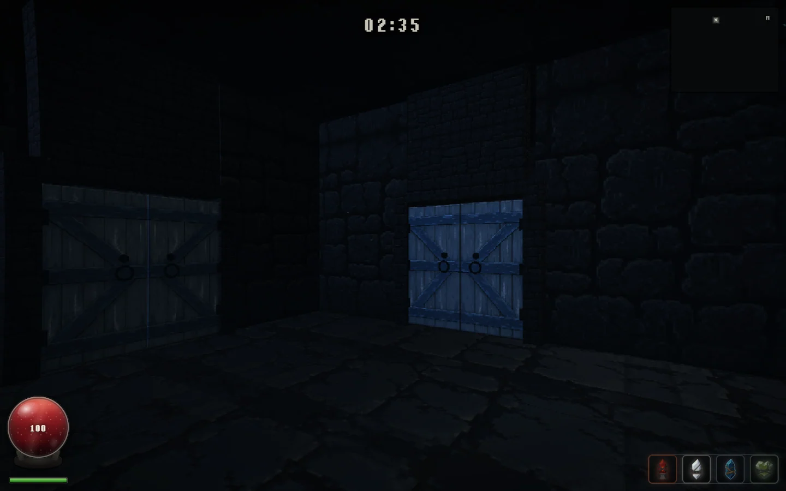
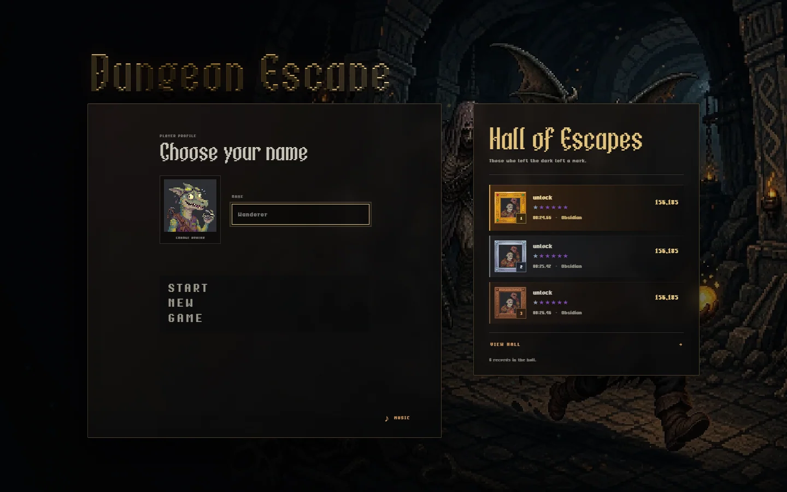
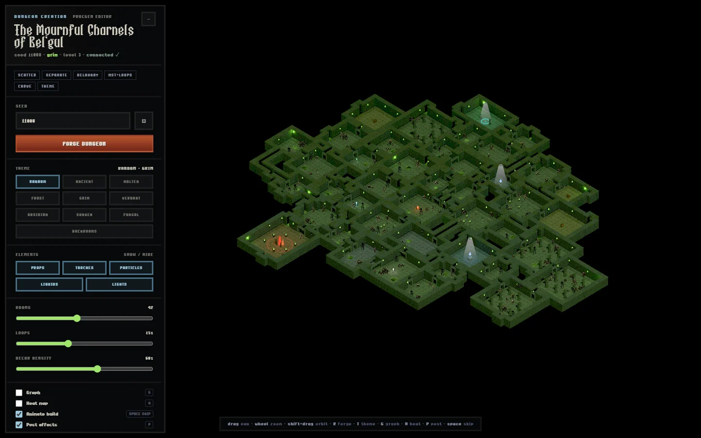
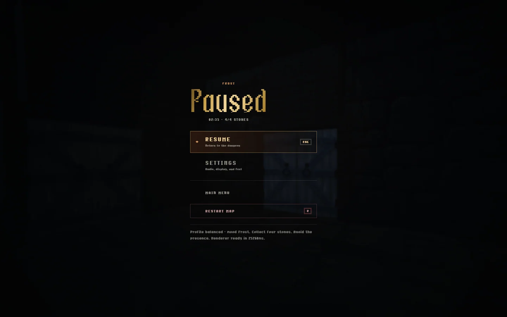

First-person procedural dungeon
Forge the maze.
Survive the descent.
Eleven biome identities, seeded campaigns, four stones, one exit—and a map Forge that lets you read the trap before you enter it.

One run, four decisions
The dungeon is a route, not a backdrop.
-
01SEED
Start a reproducible campaign or choose a fresh descent.
-
02FORGE
Inspect the generated topology before the first door opens.
-
03DESCEND
Collect four stones across a hostile biome identity.
-
04ESCAPE
Reach the portal and leave the run in the Hall.
Field notes
Built for the path you actually take.
Keyboard, mouse, and touch share the same rules. Local saves keep the run private. The public renderer remains WebGL2 while WebGPU stays an explicit opt-in until its parity gates close.
Read the renderer boundary →

